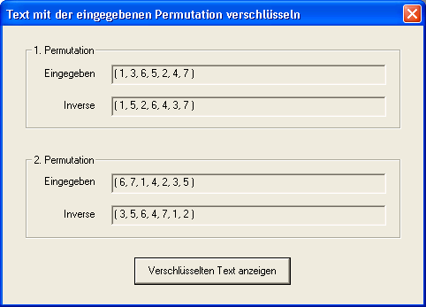

Dieser Dialog enthält Informationen zu den beiden Permutationen, mit denen das aktuelle Dokument ver- bzw. entschlüsselt wird. Wie die Permutationsverschlüsselung funktioniert, ist unter Verschlüsselung durch Permutation beschrieben; Einzelheiten zum Dialog Schlüsseleingabe finden Sie unter Dialog Permutationsschlüsseleingabe.
Das erste Feld zeigt die 1. Permutation in Zahlendarstellung, das nächste Feld deren Inverse. Entsprechend werden in den Feldern 3 und 4 die 2. Permutation bzw. deren Inverse angezeigt.
Verwendet man beim Verschlüsseln eines Dokumentes jeweils die Inverse der beiden Permutationen, so führt dies zum gleichen Ergebnis, als hätte man das Dokument ohne Verwendung der Inversen entschlüsselt.
Analog ergibt das Verschlüsseln eines Dokuments ohne Benutzung der inversen Permutationen denselben Chiffretext wie das Entschlüsseln unter Verwendung der Inversen.
Im Titel dieses Dialoges steht, ob die eingegebene Permutation oder ihre Inverse verwendet wird: